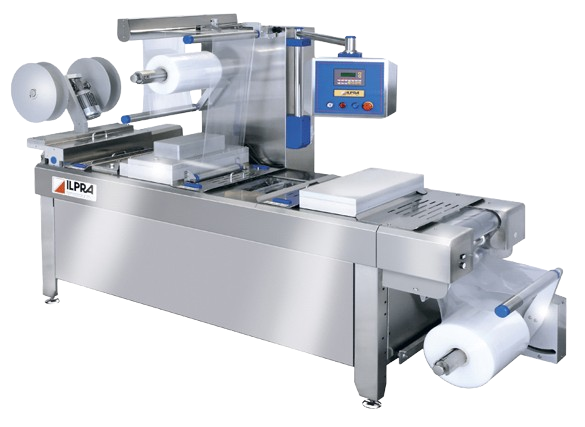
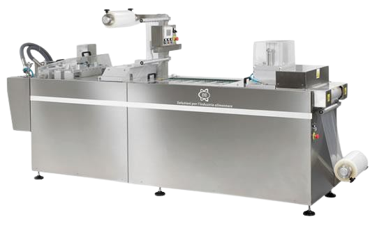

Vaakumrada-pakkimisliin
Väiketootjale
ILPRA EASYFORM
ILPRA EASYFORM on tippklassist kompaktne vaakumpakkimisliin. Liini koostamisel on kasutatud kaasaegset tehnoloogiat ja parimaid koostematerjale. ILPRA on jõuliselt laiendanud turuosa vaakumliinide turul tänu koostööle MULTIVAC inseneridega. EASYFORM on sobilik valik toiduainete ja meditsiiniliste tootete pakkimiseks väiksemates kogustes.

Masina omadused:
Paindlik: liin võib töötada nii pehme kui jäiga pakendiga.
Kasutajasõbralik: töövormide vahetus on enneolematult lihtne - ei ole vaja lahti keerata ühtegi kruvi!
Konkurentsivõimeline: EASYFORM on saadaval alati laos, mis tagab kiire tarneaja ja hea hinna.
Hügieen: masin on valmistatud roostebavabast terasest ja anodiseeritud alumiiniumist. Ohutusklass vastab standardile IP65, mis tähendab sobivust tööks märgades tingimustes.
Lisavõimalused: liin on võimalik kohandada vastavalt vajadusele mitmete lisaseadmetega.
Rohkem infot: ILPRA EASYFORM
ORVED BMB FORM

ORVED on loonud kompaktseima ja soodsaima vaakumliini turul.
Vaatamata väikestele mõõtudele on masin võimeline valmistama kilest suuremõõdulisi pakendeid.
Loomulikult on võimalik ka pakisuuruste vahetamine operaatri poolt.
Masin vastab CE standarditele ja on mõeldud töötamiseks märjas keskkonnas.
Tänu FORM seeriale on nüüd võimalik väikeste kuludega astuda samm edasi vaakumkambermasinast radapakkimisliinil pakkimiseks.
Rohkem infot: ORVED BMB FORM